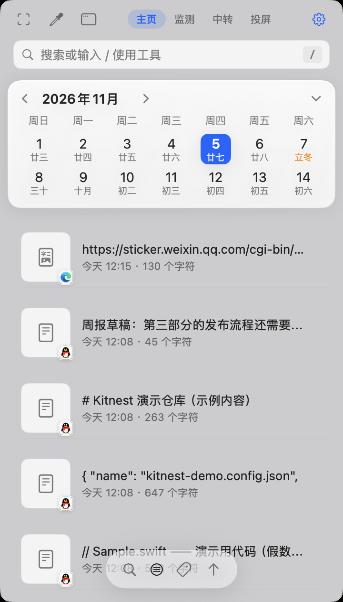
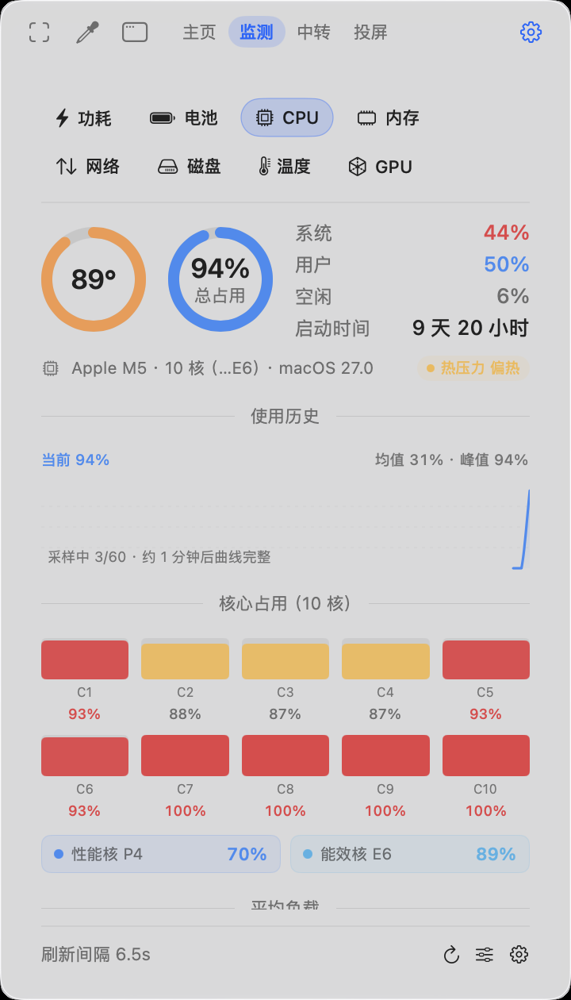
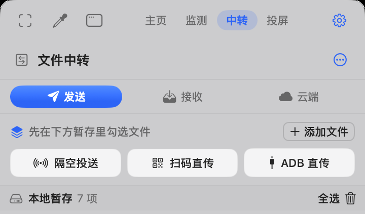
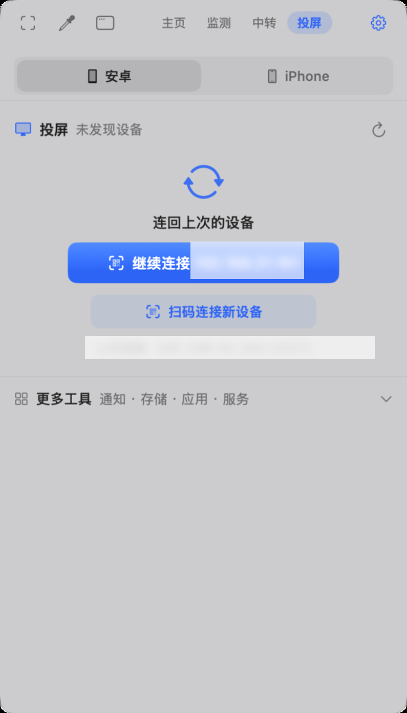
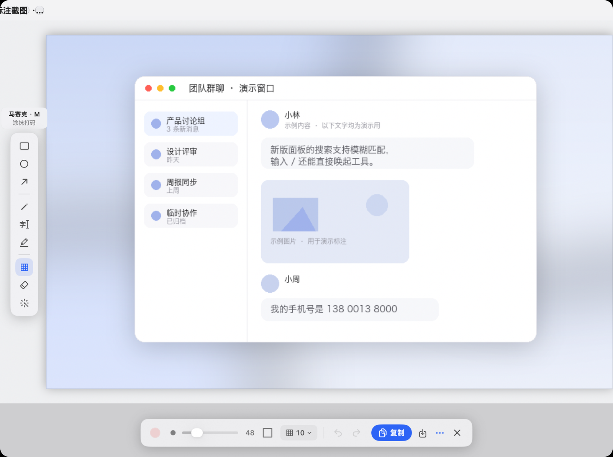
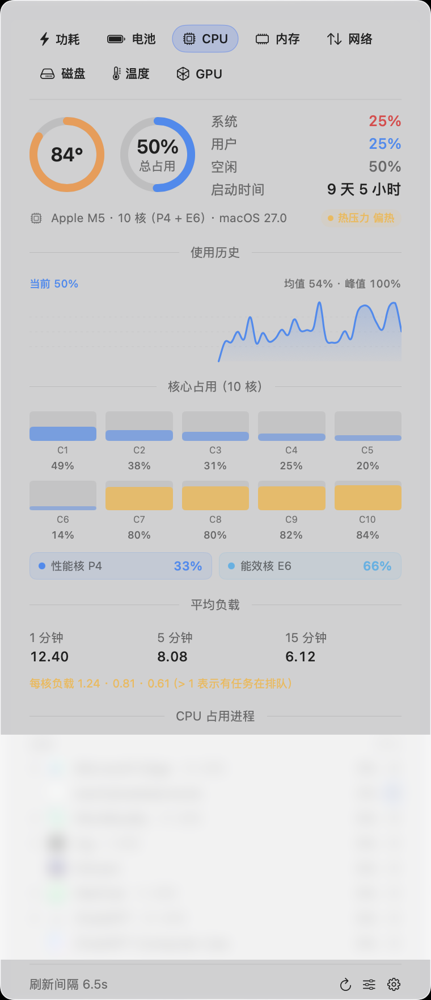
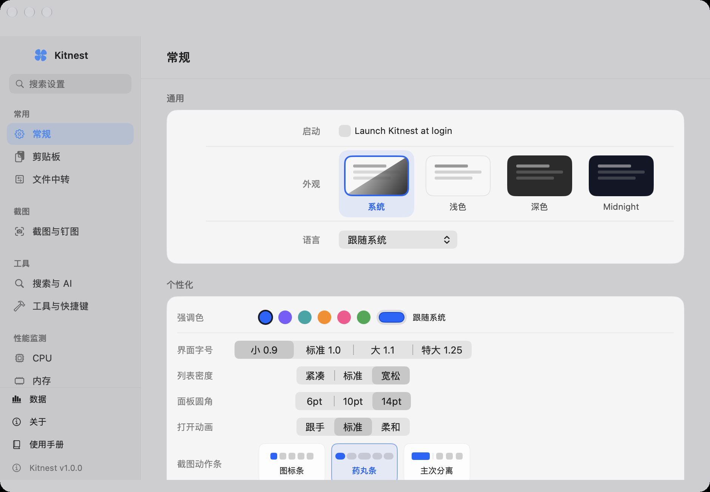
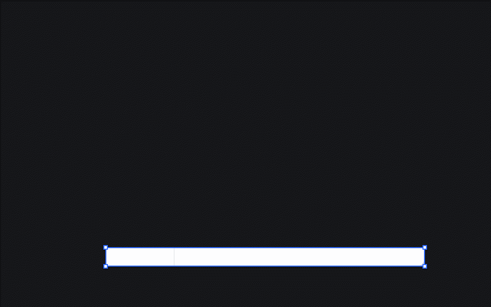

Kitnest
菜单栏效率工具
Kitnest
菜单栏效率工具
剪贴板历史
复制过的文字、图片、文件和链接自动留存，同一条内容重复复制只占一格。
- 模糊搜索，输入应用名也能筛
- 双击直接回贴到当前窗口
- 置顶、标签、批量清理
Kitnest 把剪贴板历史和截图标注放在最前面，系统监控、文件互传与安卓投屏也收进菜单栏里的同一个图标。 点一下，或者按 ⌥A。
这六个功能同属一个 App。剪贴板、截图、监控、传文件、投屏，外加一个工具箱，共用同一套搜索、快捷键和设置。
复制过的文字、图片、文件和链接自动留存，同一条内容重复复制只占一格。
区域截图、窗口截图、长截图三种入口，截完可以就地标注、识字或翻译，也能钉在屏幕上。
八个模块的实时数据，既能摆进菜单栏，也能开成独立小窗。
文件先进一个暂存池，再按对面是什么设备，选一条出口发出去。
USB 或一键无线连上手机后，镜像、通知、存储和应用窗口都能在 Mac 上看。
搜索框输入 / 就变成启动器。哈希、二维码这类小工具都在里面，日历和媒体转换也有。
下面按「你什么时候会用到」来写，不按代码模块写。所有快捷键都可以在设置里改。
复制文字、图片、文件或链接，都会自动进历史，新的排在最上面。重复复制同一条内容不会重复占位；历史默认保留 30 天、容量上限 2GB，两个数值都能改。
/ 就切成工具启动器，例如 /hash、/qr。区域截图 ⌥S、窗口截图 ⇧⌥W（悬停识别窗口，被遮挡的部分也能完整还原）、长截图 ⇧⌥L（自动滚动拼接）。松手后弹出动作条：复制、保存、贴图、识字、翻译、编辑、美化、空投。
工具区、颜色与粗细、撤销与导出，三段排布。
八个模块共用一套读取引擎：功耗、CPU、内存、网络、磁盘、传感器、电池、GPU。菜单栏部件支持 12 种形态，迷你数值、折线、柱状、饼图、速度、状态点、标签、图标都能选。按模块分别设置，改完立即生效。
所有来路的文件都汇进「本地暂存」，不管来自隔空投送、手机拉取、拖入还是剪贴板，都在里面。勾选文件后，只看对方是什么设备，选一条出口。
USB 连上手机、打开 USB 调试，点「检测设备」再点「开始投屏」即可。想摆脱线缆就点「一键无线」：它会自动执行 adb tcpip 5555 并连上手机的 Wi-Fi 地址，之后同一网络下直接检测，不用再开无线调试、不用配对码。
http://127.0.0.1:8767/mcp 给 AI 客户端用；WebDAV http://127.0.0.1:8768/ 让 Finder 把手机存储当网络盘。两者都只绑回环地址。搜索框输入 / 进入工具模式，敲名字回车即可：IP 与本机信息、日历与农历、哈希（MD5 / SHA）、Base64、二维码生成与识别、媒体格式转换、模糊搜索文件。命令面板 ⌥K 可以搜索并执行应用内的任何动作。
下面都是真机截图，没有重绘、没有补图。切换标签看不同页签。
顶部四个页签：主页、监测、中转、投屏。搜索框、日历和剪贴板历史依次排下来，底部是搜索和筛选，另外还有标签、编辑和上传。
八个模块用一排标签切换。温度页先给计算项，再列每个核心的温度、电压与电流。
发送页分成隔空投送、扫码直传与 ADB 直传三条路，接收和云端各占一栏，文件统一进本地暂存。
Android 设备中心在这里：连设备、无线配对并镜像投屏，通知、存储、应用窗口都能一起看。
左侧竖排是标注工具，底部是颜色、粗细、撤销和复制。改完直接复制，不用再开别的应用。
总占用环、使用历史曲线、每核心方块、集群占用、平均负载，最下面是占用最高的进程。







下面是完整交互流程的动图：⌥S 框选 → 截取 → 动作条 → 标注（矩形 / 箭头 / 马赛克）→ 复制。画面为模拟内容，不含任何真实数据。

FRONT/tools/make_gifs.py 生成，内容全部虚构。左边是更新完成后的「更新了什么」，右边是截图标注的工具条。
本次更新了什么
每次更新完成，首次启动会弹出一张清单，分成新增、改进和修复三组。内容来自版本清单，不写死在客户端里。
版本、体积和校验值都来自官方发布清单，打开页面时实时读取。
版本清单 kitnest/stable/latest.json
正在读取版本清单…
版本清单读取失败。
—
下载前会先检查通道，再确认下载须知。
不需要账号，不需要额外运行库。
最上面一条来自当前发布清单，下面按时间倒序排列。
正在读取版本清单…
下面这组能力从第一个公开版本起就全部具备，后续版本只在此基础上迭代。
更早的版本没有公开分发。应用内「检查更新…」与此同源。
快捷键都能在「设置 → 工具与快捷键」里改；下面列的是默认值。
按 ⌥A 一定能呼出。菜单栏太挤时图标可能被收进刘海，减少其他应用的菜单栏图标即可。
系统没给「屏幕录制」权限。右键菜单栏图标 →「欢迎与权限…」→「权限引导」，勾选后重启应用。
需要「辅助功能」权限。已勾选仍无效时，在系统设置里删掉 Kitnest 再重新添加一次。
| 功能 | 默认快捷键 |
|---|---|
| 打开 / 收起主面板 | ⌥A |
| 区域截图 | ⌥S |
| 窗口截图 | ⇧⌥W |
| 长截图 | ⇧⌥L |
| 截图并识字 | ⇧⌥S |
| 截图并贴图 | ⇧⌥P |
| 截图翻译 / 划词翻译 | ⇧⌥T / ⇧⌥D |
| 取色 | ⌥C |
| 悬浮剪贴板 | ⇧⌘V |
| 性能监测窗 / 部件窗 | ⌥P / ⌥M |
| 文件中转 | ⌥T |
| 命令面板 | ⌥K |
| 暂停 / 恢复剪贴板记录 | ⇧⌥R |
| 打开设置 | ⌘, |
先确认双方都开了 Wi-Fi 和蓝牙，隔空投送没有设成「仅限联系人」。安卓和 Windows 收不到空投是正常的，改走「扫码直传」（任何带浏览器的设备），或「ADB 直传」。
确认「设置 → 性能监测 → 监测设置」的总开关是打开的。刚启动的前几秒数据为空是正常的；某些数值（如风扇转速）在没有对应硬件的机器上本来就不显示。
USB 连接需要手机开启「开发者选项 → USB 调试」。无线连接先用 USB 连一次并点「一键无线」；公司网络隔离组播时，直接手动填「IP:端口」。
没装 scrcpy 时，按应用内引导执行 brew install scrcpy。
不会。安装包下载后会先做 SHA-256 校验，不匹配直接中止；替换前把旧版本备份为 /Applications/Kitnest.app.bak，替换失败会自动回滚。
macOS 13 Ventura 及以上，Apple Silicon 与 Intel 都能运行。部分功能依赖系统能力：应用窗口投屏需要 Android 14+，无线调试配对需要 Android 11+。
退出应用后，把「应用程序」里的 Kitnest.app 删掉；需要连数据一起清理时，再删除 ~/Library/Application Support/Kitnest 与登录项里的条目。
一个常驻菜单栏、能读剪贴板也能截屏的应用，理应把边界写清楚。
剪贴板记录、标签和使用统计都写在 ~/Library/Application Support/Kitnest 下的本地数据库。应用不要求登录，也没有服务器侧的账号体系；删除这个目录就等于清空全部记录。
没有埋点 SDK，不做崩溃上报，也没有「匿名使用数据」。官网本身也不加载第三方统计脚本。
投屏页里的两个扩展服务都需要你手动打开，而且只监听 127.0.0.1：局域网里的其他设备连不上，公网更连不上。
http://127.0.0.1:8767/mcp，需要进程级 token；拒绝跨站来源与预检请求http://127.0.0.1:8768/，供 Finder 挂载手机存储你即将下载 Kitnest 的 macOS 整包（—）。下载完成后建议先核对 SHA-256，再解压使用。